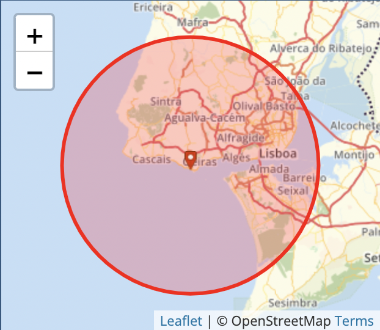
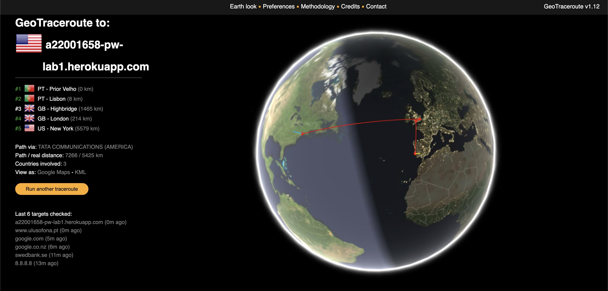

Endereço de Rede : 85.244.71.241
Como o próprio nome indica, trata-se de um comando que vai traçar a rota de um pacote pela rede até o destino dele. A funcionalidade foi implementada pela primeira vez em 1988 por Van Jacobson. Por meio do comando tracert, é possível descobrir os caminhos feitos pelos pacotes desde que são originados até o ponto a que precisam chegar.
A imagem acima é um exemplo do traceroute relativamente
a um website que reside nos Estados Unidos da América.
Para visualizar o código recebido de um website o utilizador terá que
ir as Developer Tools do seu web browser, e de seguida clicar em ver código fonte.
Como pode-se observar foram nos transferidos dois ficheiros, um sendo o código fonte
e o outro a imagem utilizada
Usando outra vez a ferramenta, Developer Tools, clicando na opção de Network pode-se observar diversas informações do contéudo que foi carregado.